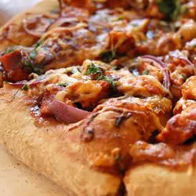

BBQ Chicken Pizza

Barbecue Chicken Pizza Made Easy
This is a different take on a traditional classic dish, sure to blow your mind!
Ingredeients
- 1 12" pre-baked pizza crust
- 1 cup spicy bbq sauce
- 2 skinless boneless chicken breast halves, cooked and cubed
- 1 cup sliced pepperoncini peppers
- 1 cup chopped red onion
- 1/2 cup chopped fresh cilantro
- 2 cups shredded Colby-Jack cheese
Steps
- preheat oven to 350 degrees farenheit (175 degrees celcius)
- place crust on baking sheet or cooking stone
- spread barbecue sauce on crust
- top with chicken, pepperoncini peppers, onion, and cilantro
- cover entire crust with toppings in Colby-Jack cheese (add to liking)
- bake in preheated oven until cheese is melted and bubbly (typically 15 mins, longer if preferred)
Serve Your Freshly Finished Dish - Enjoy!